В заданиях группы Dynamic мы встречаемся с двумя новыми видами данных: это динамические структуры,
реализованные в виде цепочек связанных друг
с другом записей типа TNode, и указатели типа PNode на записи TNode:
PNode = ^TNode. Типы TNode и PNode не являются стандартными типами языка Паскаль;
они определены в задачнике Programming Taskbook следующим образом (приводятся только те поля записи TNode, которые
используются при выполнении заданий группы Dynamic):
type
PNode = ^TNode;
TNode = record
Data: integer;
Next: PNode;
Prev: PNode;
. . .
end;
На примере задания Dynamic2 рассмотрим особенности, связанные с использованием этих новых типов данных.
Программа-заготовка для задания Dynamic2, созданная с помощью команды
меню «Модули | Создать шаблон программы», кнопки
 или клавиатурной
комбинации Shift+Ctrl+L, имеет следующий вид:
или клавиатурной
комбинации Shift+Ctrl+L, имеет следующий вид:
uses PT4;
begin
Task('Dynamic2');
end.
После запуска данной программы на экране появится окно задачника:
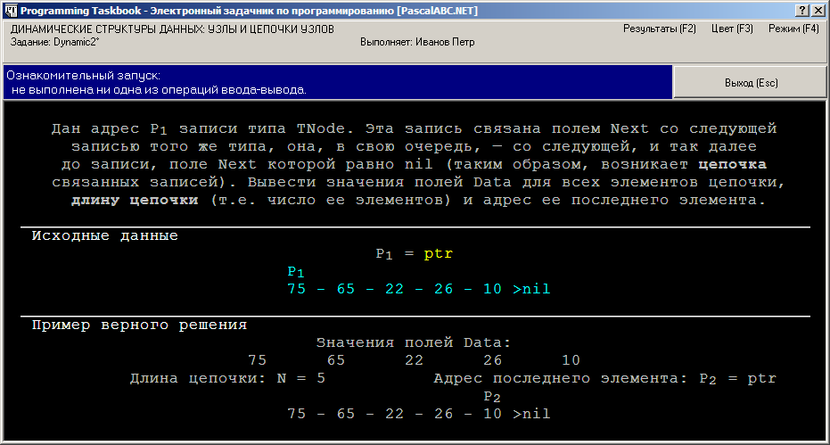
Это окно содержит в качестве исходных и результирующих данных новые элементы: динамические структуры и указатели.
Начнем с описания того, как отображается на экране динамическая структура. Для ее вывода используются две
экранные строки; в первой строке отображаются имена указателей, связанных с данной структурой,
а во второй — содержимое элементов этой структуры, то есть значения их полей Data и способ связи
между ними. Вся информация о динамической структуре отображается бирюзовым цветом (подобно информации об элементах файлов).
Рассмотрим в качестве примера динамическую структуру, указанную на рисунке:
P1
75 - 65 - 22 - 26 - 10 >nil
Этот текст означает, что структура состоит из 5 элементов, причем ее первый элемент имеет поле Data,
равное 75, и связан с помощью своего поля Next со вторым элементом, поле Data
которого равно 65, и так далее до последнего, пятого элемента, поле Data которого равно 10,
а поле Next равно nil, что является признаком завершения структуры.
Таким образом, текст, описывающий данную динамическую структуру, является максимально упрощенным вариантом
следующей схемы:
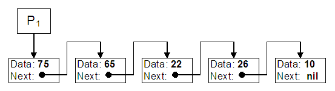
Поскольку эта структура указана в разделе исходных данных, следовательно, после инициализации задания она уже существует и размещается в некоторой области динамической памяти (подобно тому, как исходные файлы после инициализации задания размещаются в каталоге учащегося).
Как получить доступ к этой существующей динамической структуре? Здесь также уместна аналогия с файлами. Для доступа к внешнему файлу необходимо знать его имя, и в любом задании на обработку файлов имена исходных файлов входят в набор исходных данных. Для доступа к данным, размещенным в динамической памяти, необходимо знать их адрес, и поэтому в любом задании на обработку динамических структур в набор исходных данных входят указатели, содержащие адреса этих структур.
Из текста, описывающего динамическую структуру, видно, что на ее первый элемент указывает указатель
с именем P1, который также содержится в наборе исходных данных. Описание этого указателя имеет вид
P1 = ptr
Здесь текст P1 = является комментарием и выделяется, как обычный комментарий,
светло-серым цветом, а текст ptr означает, что этот элемент исходных данных является указателем,
который надо ввести в программу с помощью процедуры ввода read.
Замечание. Может возникнуть вопрос: почему вместо условного текста «ptr» не отображается «настоящее» значение указателя (то есть некоторый четырехбайтный адрес)? Это связано с тем, что, даже выведя это значение на экран, мы не сможем определить, с какими данными связан этот адрес, поэтому подобная информация на экране будет излишней.
Итак, слово ptr в разделе исходных или результирующих данных означает, что соответствующий элемент данных
является указателем, причем непустым (для пустого указателя используется слово nil).
Определить, с каким элементом динамической структуры данных связан непустой указатель, можно по экранной
информации об этой динамической структуре.
Разумеется, при чтении указателя программа учащегося получит «настоящий» адрес, с помощью которого она сможет
обратиться к исходной динамической структуре.
Аналогично, создав (или преобразовав) некоторую динамическую
структуру, программа учащегося должна передать задачнику некоторый адрес,
связанный в этой структурой (используя процедуру вывода write).
Зная этот адрес, задачник сможет проверить правильность созданной структуры.
Вернемся к заданию Dynamic2. В нем не требуется ни создавать, ни преобразовывать исходную структуру данных; ее необходимо лишь проанализировать, а именно, определить значения всех ее элементов, подсчитать количество элементов и, кроме того, вывести указатель на последний элемент этой структуры.
Приведем вначале неполное решение задачи, выводящее все необходимые данные, кроме указателя на последний элемент:
uses PT4;
var
p1: PNode;
n: integer;
begin
Task('Dynamic2');
read(p1);
n := 0;
while p1 <> nil do
begin
write(p1^.Data);
n := n + 1;
p1 := p1^.Next;
end;
write(n);
end.
После запуска программы можно убедиться, что все числовые результирующие данные найдены правильно, однако из-за того, что не выведен указатель на последний элемент, решение признано ошибочным с диагностикой «Выведены не все результирующие данные»:
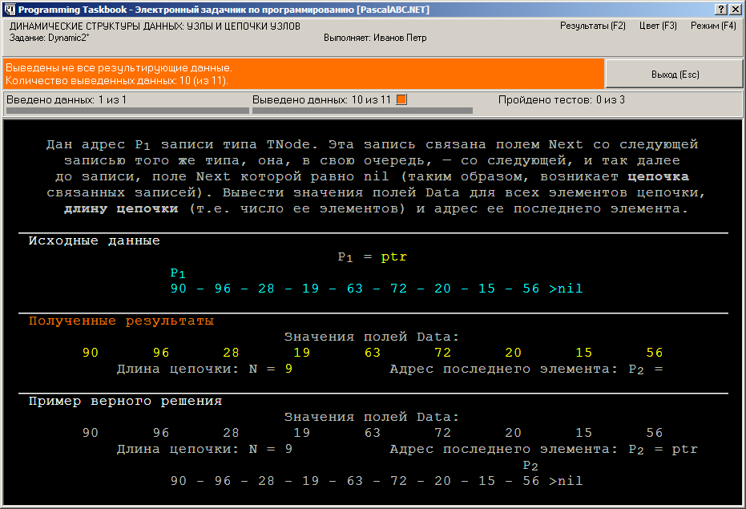
Добавим в конец программы оператор
write(p1);
После запуска нового варианта программы все требуемые данные будут выведены, однако результирующее значение
указателя будет равно nil. Это связано
с тем, что после завершения цикла while в переменной p1 содержится нулевой указатель,
а не указатель на последний элемент динамической структуры:
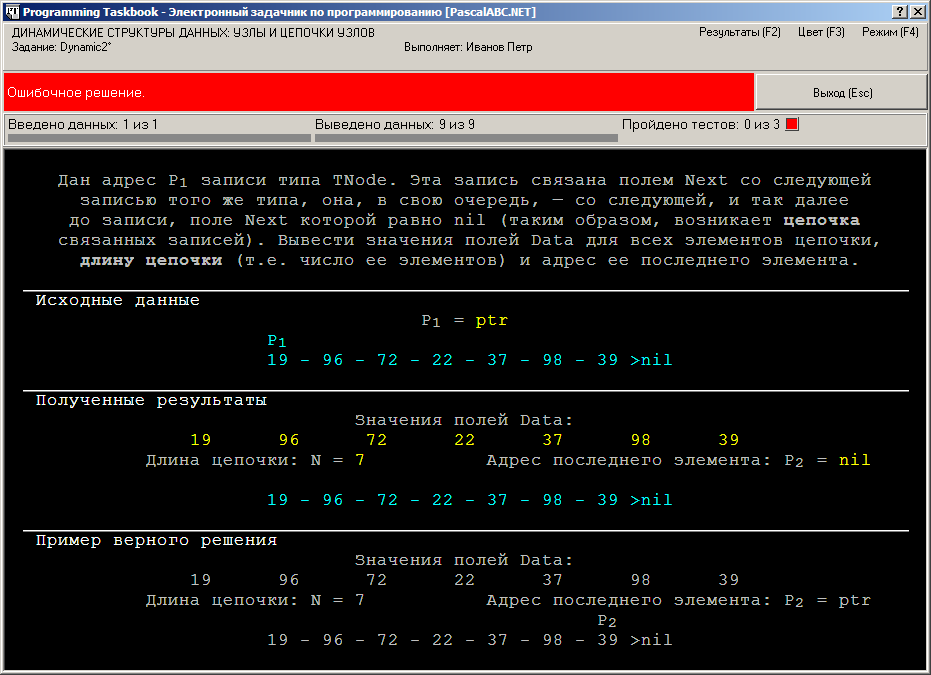
Для того чтобы получить правильное решение, опишем вспомогательную переменную p2,
в которой будем сохранять адрес элемента, предшествующего элементу с адресом p1.
После завершения цикла while в этой переменной будет храниться адрес последнего элемента
динамической структуры:
uses PT4;
var
p1,p2: PNode;
n: integer;
begin
Task('Dynamic2');
read(p1);
n := 0;
while p1 <> nil do
begin
write(p1^.Data);
n := n + 1;
p2 := p1; { сохраняем адрес текущего элемента }
p1 := p1^.Next; { и переходим к следующему элементу }
end;
write(n, p2);
end.
Запустив эту программу три раза, мы получим сообщение «Задание выполнено!»:
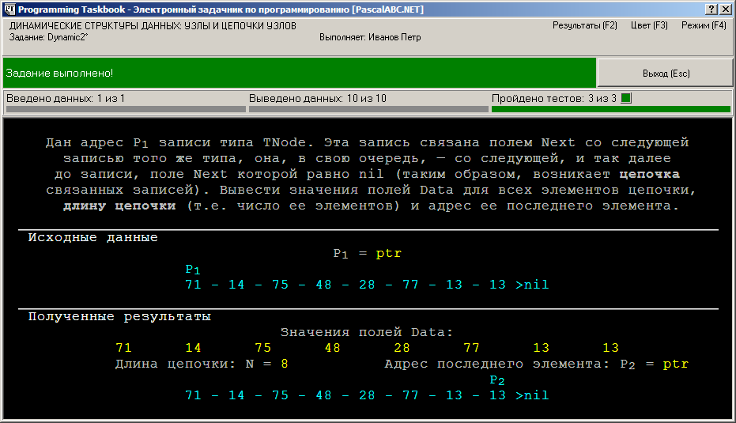
Рассмотрим простейшее задание, связанное с добавлением элемента к динамической структуре-стеку: Dynamic3.
При ознакомительном запуске этого задания мы обнаружим новое обозначение в тексте, описывающем результирующий стек, а именно, точки, обрамляющие первый элемент стека:
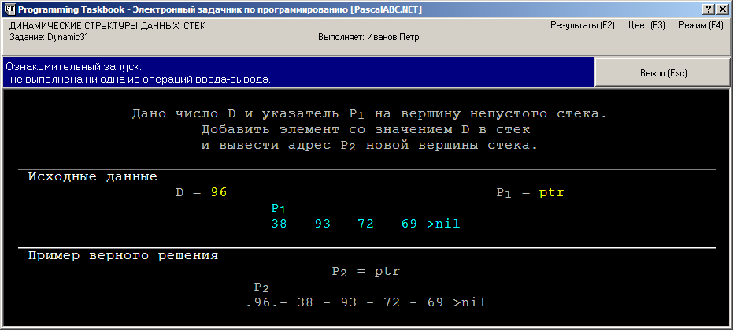
Точки обозначают элементы динамической структуры, память для которых должна быть выделена программой учащегося (в отличие от тех элементов, которые размещаются в памяти самим задачником).
Что произойдет, если динамическая структура будет создана с ошибками? Для того чтобы это выяснить, вернем в программе, решающей задание Dynamic3, указатель на прежнюю вершину стека, не добавляя к ней новый элемент:
uses PT4;
var
d: integer;
p1: PNode;
begin
Task('Dynamic3');
read(d, p1);
write(p1);
end.
После запуска данной программы окно задачника примет вид:
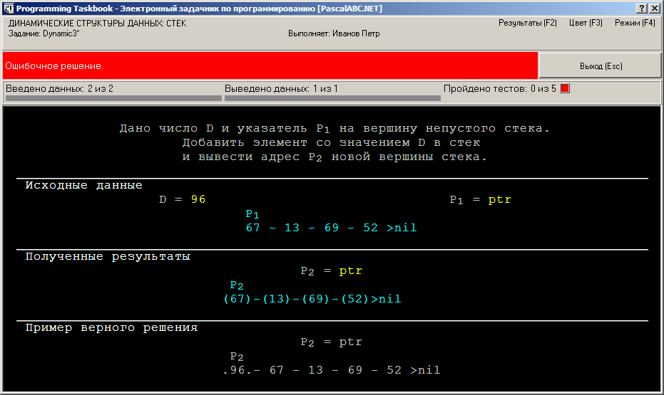
Скобки вокруг каждого элемента результирующего стека означают, что эти элементы созданы самим задачником, но располагаются не на тех позициях, на которых они должны находиться при правильном решении. Действительно, тот элемент, который в решении является первым, должен (после добавления нового элемента) оказаться вторым и т. д. Итак, наличие скобок в тексте результирующей динамической структуры означает, что ее элементы располагаются не в том порядке, который требуется.
Для получения правильного решения задания Dynamic3 необходимо явно выделить память для нового элемента,
используя процедуру New, и заполнить поля этого элемента, связав его с текущей вершиной стека
(в результате сам этот элемент станет новой вершиной, адрес которой и следует вывести):
uses PT4;
var
d: integer;
p1, p2: PNode;
begin
Task('Dynamic3');
read(d, p1);
New(p2);
p2^.Data := D;
p2^.Next := p1;
write(p2);
end.
Приведем вид окна задачника при первом запуске этой программы:
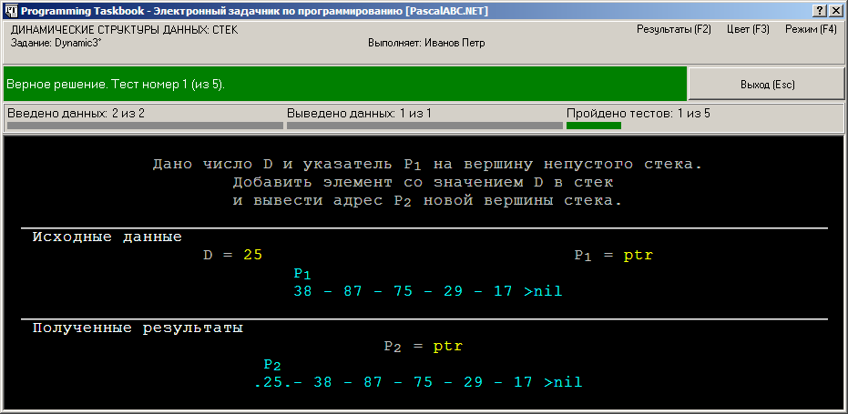
Рассмотрим простейшее задание на удаление элемента из динамической структуры — Dynamic5. В нем требуется удалить из стека вершину и вернуть указатель на новую вершину, то есть на элемент, расположенный непосредственно за удаленным.
Особенность заданий на удаление элементов из динамических структур заключается в том, что удаляемый элемент необходимо не только «отсоединить» от исходной динамической структуры, но и полностью «уничтожить», то есть освободить память, занимаемую этим элементом.
Для того чтобы напомнить учащемуся о необходимости уничтожения некоторых элементов исходной динамической структуры, эти элементы выделяются на экране синим цветом меньшей яркости, чем обычные элементы (на рисунке таким способом выделен элемент 15):
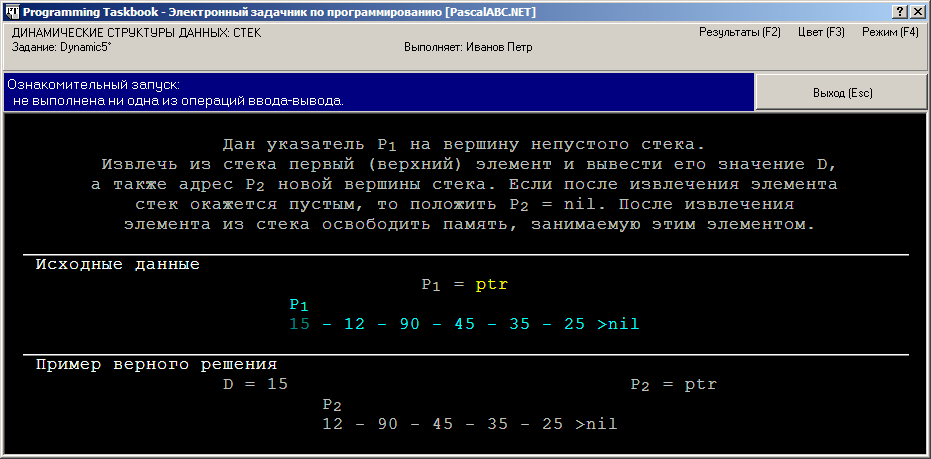
Вначале приведем неправильный вариант решения, в котором не освобождается память, занимаемая удаленным из стека элементом:
uses PT4;
var p1: PNode;
begin
Task('Dynamic5');
read(p1);
write(p1^.Data, p1^.Next);
end.
Несмотря на то что все результирующие данные будут совпадать с контрольными (то есть текст в разделах «Полученные результаты» и «Пример верного решения» будет одинаковым), на информационной панели появится сообщение об ошибке «Не освобождена динамическая память», а в разделе исходных данных будет выделен красным цветом тот элемент, который требовалось удалить:
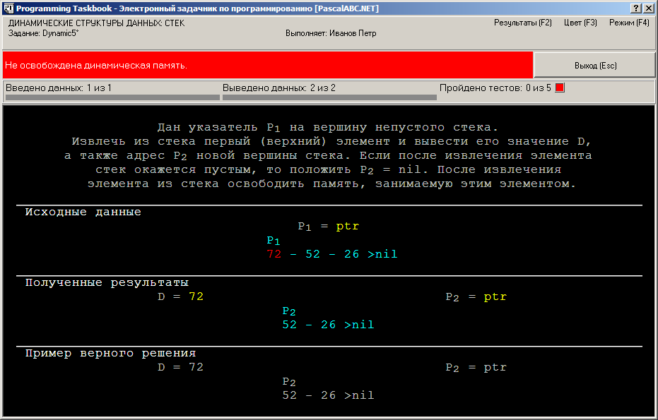
Для получения правильного решения достаточно добавить в конец программы оператор вызова
процедуры Dispose, освобождающий память, на которую указывает указатель p1:
uses PT4;
var p1: PNode;
begin
Task('Dynamic5');
read(p1);
write(p1^.Data, p1^.Next);
Dispose(p1);
end.
Приведем вид окна задачника при первом запуске этой программы:
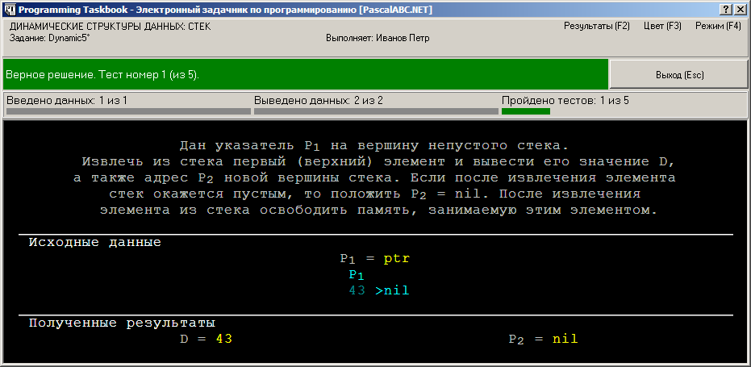
Особенности работы с двусвязными динамическими структурами рассмотрим на примере задания Dynamic30, в котором требуется преобразовать исходную односвязную структуру в двусвязную. Запустив программу-заготовку, созданную для этого задания, мы увидим в области исходных данных информацию об «обычной» односвязной структуре, подобной рассмотренным в предыдущих примерах:
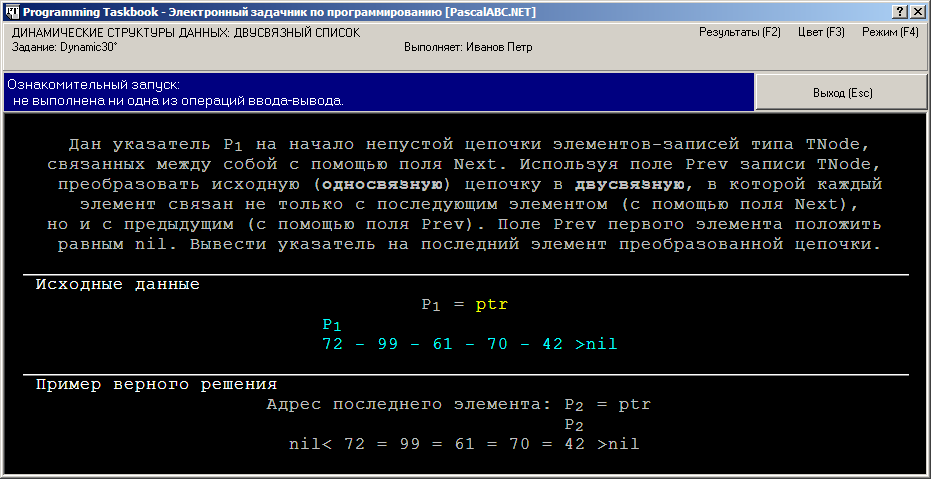
Динамическая структура, приведенная в разделе результатов, имеет две особенности:
во-первых, ее элементы связаны символом =, а во-вторых, перед первым элементом присутствует текст
nil<.
Это означает, что результирующая структура является двусвязной, то есть каждый ее элемент связан не
только с последующим элементом (с помощью поля Next, как в односвязной структуре), но и с
предыдущим элементом (с помощью нового поля Prev), а поле Prev первого элемента имеет
значение nil:
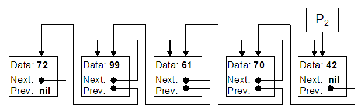
Для преобразования исходной односвязной структуры в двусвязную необходимо задать правильные значения для
полей Prev всех элементов структуры, перебирая в цикле пары соседних элементов:
uses PT4;
var
p1, p: PNode;
begin
Task('Dynamic30');
read(p1);
p := p1^.Next;
while p <> nil do
begin
p^.Prev := p1;
p1 := p1^.Next;
p := p^.Next;
end;
write(p1); { вывод указателя на последний элемент }
end.
В этой программе мы определили поля Prev для всех элементов, кроме первого. Поэтому решение будет считаться ошибочным
(обратите внимание на то, что перед первым элементом полученного списка отсутствует текст nil<):
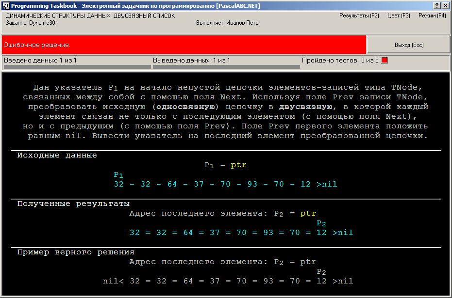
Замечание. При анализе ошибочного решения часто оказывается полезным и специальное обозначение «=» для двойной связи.
Предположим, например, что информация
о результирующей двусвязной структуре, созданной программой, имеет вид:
P2
nil< 33 = 64 - 78 = 12 = 51 >nil
Это означает, что между вторым и третьим элементом структуры имеется не двойная, а одинарная связь
(поле Next второго элемента содержит адрес третьего элемента, а поле Prev третьего элемента
не содержит адрес второго).
Для получения правильного решения достаточно добавить в программу перед циклом while
следующий оператор:
p1^.Prev := nil;
Приведем вид окна задачника при первом запуске исправленной программы:
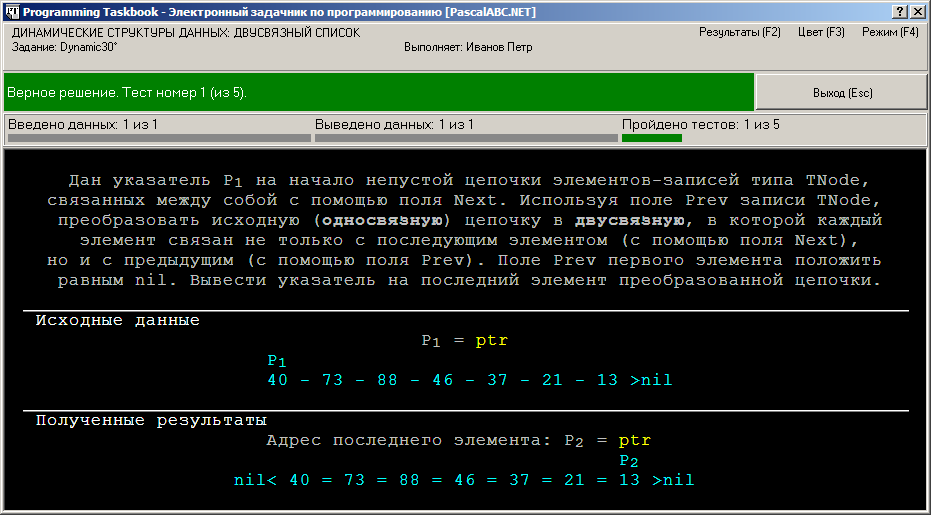
Замечание. Для задания Dynamic30 возможен более короткий вариант решения, в котором не требуется особо обрабатывать первый элемент списка:
uses PT4;
var
p1, p: PNode;
begin
Task('Dynamic30');
p := nil;
read(p1);
while p1 <> nil do
begin
p1^.Prev := p;
p := p1;
p1 := p1^.Next;
end;
write(p);
end.
Динамическая структура называется циклической, если она замкнута в «кольцо», то есть ее последний элемент
связан полем Next с первым (в случае двусвязной структуры требуется также, чтобы ее первый элемент
был связан полем Prev
с последним элементом). Простейшим заданием на циклические структуры является
Dynamic55, в котором требуется
преобразовать обычный двусвязный список
в циклический.
Запустив программу-заготовку для этого задания, мы увидим на экране изображение двух динамических структур, причем исходная структура является «обычным» двусвязным списком, а результирующая структура — циклическим двусвязным списком:
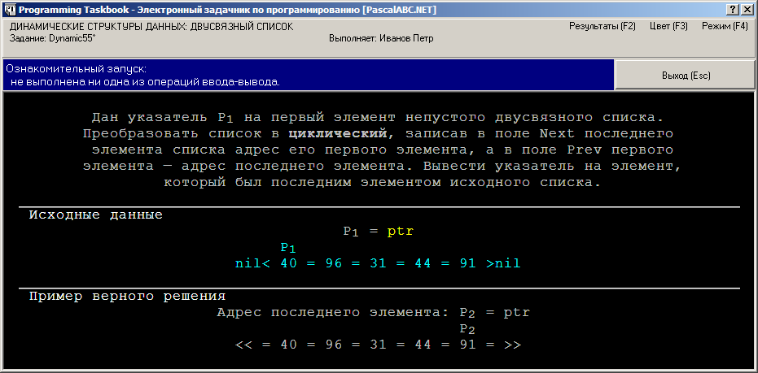
Обозначения << = и = >> позволяют отличить циклический список от обычного
(напомним, что у обычного двусвязного списка поле Prev первого элемента и поле Next последнего
элемента равны nil).
Таким образом, экранный текст, описывающий циклический двусвязный список, является упрощенным вариантом следующей схемы:
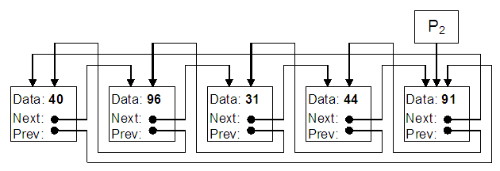
Для решения задания Dynamic55 достаточно найти последний элемент исходного списка и связать его с первым элементом:
uses PT4;
var
p1, p2: PNode;
begin
Task('Dynamic55');
read(p1);
p2 := p1;
while p2^.Next <> nil do
p2 := p2^.Next;
p2^.Next := p1;
write(p2);
end.
В данном варианте решения мы «забыли» о том, что надо связать не только последний элемент с первым, но и первый с последним (поскольку наш список — двусвязный). Поэтому решение оказалось ошибочным (обратите внимание на то, что после последнего элемента полученного списка изображена одинарная, а не двойная черта):
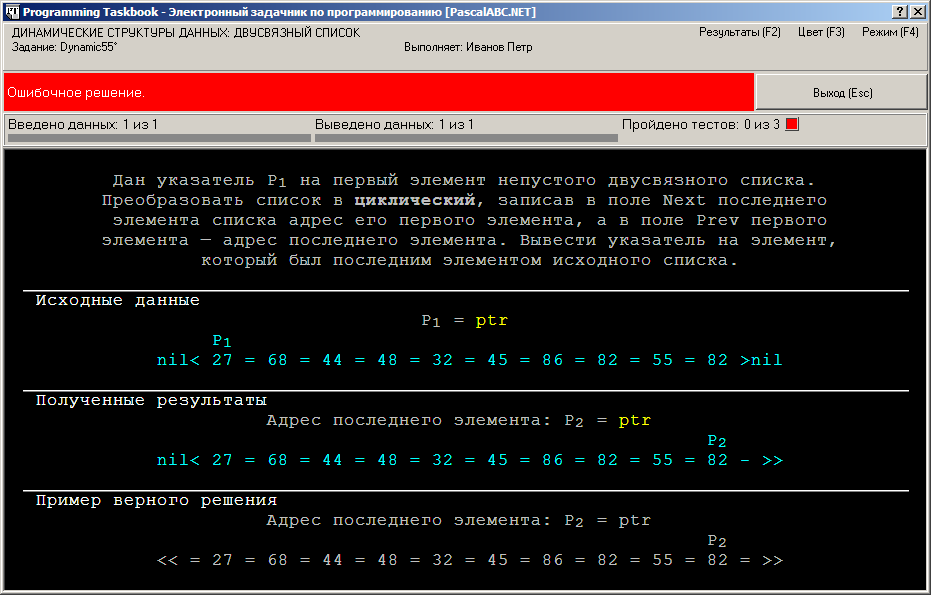
Для получения правильного решения достаточно добавить в программу перед процедурой вывода write
следующий оператор:
p1^.Prev := p2;
Приведем вид окна задачника при первом запуске исправленной программы:
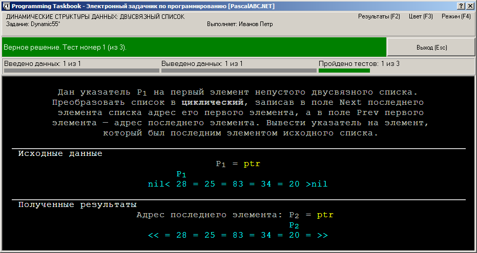
Щелкнув мышью на метке «Результаты (F2)», расположенной в правом верхнем углу окна задачника, или нажав клавишу F2, мы можем вывести на экран окно результатов, в котором будет перечислены все наши попытки решения задачи:
Dynamic2 a08/09 13:11 Ознакомительный запуск.
Dynamic2 a08/09 13:15 Выведены не все результирующие данные.
Dynamic2 a08/09 13:17 Ошибочное решение.
Dynamic2 a08/09 13:20 Задание выполнено!
Dynamic3 a08/09 13:21 Ознакомительный запуск.
Dynamic3 a08/09 13:24 Ошибочное решение.
Dynamic3 a08/09 13:28 Задание выполнено!
Dynamic5 a08/09 13:29 Ознакомительный запуск.
Dynamic5 a08/09 13:30 Не освобождена динамическая память.
Dynamic5 a08/09 13:31 Задание выполнено!
Dynamic30 a08/09 13:34 Ознакомительный запуск.
Dynamic30 a08/09 13:42 Ошибочное решение.
Dynamic30 a08/09 13:43 Задание выполнено!
Dynamic55 a08/09 13:54 Ознакомительный запуск.
Dynamic55 a08/09 13:57 Ошибочное решение.
Dynamic55 a08/09 13:58 Задание выполнено!
Для закрытия окна результатов достаточно нажать клавишу Esc.
Окно результатов можно отобразить на экране и после закрытия окна задачника и возврата в среду PascalABC.NET.
Для этого надо использовать команду меню «Модули | Просмотреть результаты», кнопку
 или клавиатурную
комбинацию Shift+Ctrl+R.
или клавиатурную
комбинацию Shift+Ctrl+R.